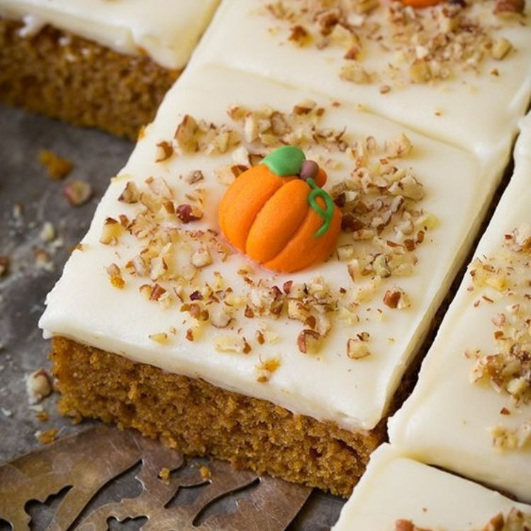
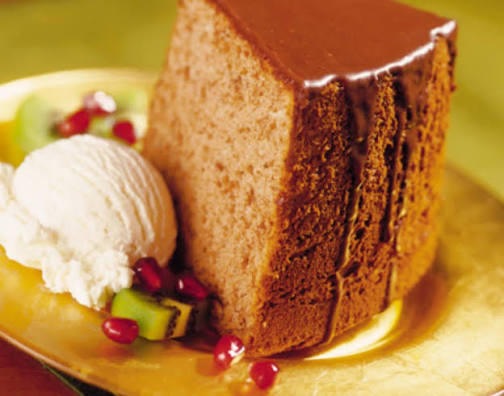

BLOG #2
Bienvenidos al blog de Pasteleria Mil Sabores aqui te contaremos curiosidades sobre nuestra pagina dando un enfoque a las preguntas generales que nos dan en nuestro dia a dia y queremos darle el gusto de poder responderlas ya que nos sentimos eternamente agradecidos con nuestros clientes
Pregunta 1#: ¿Nuestros productos son en verdad caseros?
RESPUESTA: Obviamente que nuestros productos son caseros y relativamente deliciosos causando una gran felicidad a todos nuestros clientes y tratar de que sean lo mas caseros posibles para que se sienta esa dulcura que tanto nos caracterisa

Pregunta 2#: ¿Somos la mejor reposteria del mundo por nuestro Record Guinness?
RESPUESTA: En este caso depende mucho a la persona que lo preguntes ojala lo fueramos pero hay pastelerias que pueden cumplir con eso nosotros con demostrar nuestro esfuerzo y nuestro carisma en cada pastel nos sentimos contentos en darle las mejores experiencias gastronomicas que podrian probar y por eso nos esforzamos a diario
